Tidal Pools
Tidal Pools is a recognition of our connection to the past to inform our future, and to make room for action through reflection.
- Site
- Trillium Park, Vancouver: the northern edge of Skwácháýs
- Collaborator
- Nyomi Williams, visual artist
- Scope
- Site analysis, concept, phasing, materials
- Year
- 2025

Artist statement
Tidal Pools dedicates a large swath of the eastern side of Trillium Park to decolonized forms of reflection and introspection. Set in a speculative future Vancouver, it is a space of respite for people healing from generational trauma, intended to support the Host Nation’s arduous work on a Land Care Use Plan and to encourage knowledge sharing between the community and the people developing that plan.
It blends and blurs our sense of time to show that knowledge-forming is constant, and that it can be an introspective, embodied act. The pools represent the land the xʷməθkʷəy̓əm, Sḵwx̱wú7mesh and səl̓ílwətaʔɬ peoples harvested from and co-existed with alongside the spirit world.
Site
Trillium Park occupies the northern edge of what is traditionally known as Skwácháýs, “place where water is drawn down into a whirlpool.” Before 1850 the land was an intertidal mudflat stretching for kilometres, used for gardening, harvesting marine life and hunting, and understood as a gateway for spirits travelling between realms.
Today the park is mostly fenced soccer fields, a playground and a community garden, sandwiched between a semi-industrial area, the new St. Paul’s Hospital, Chinatown and Strathcona. Few people visit: there’s little shade, few trees, private gardens and fields that take up 70% of the space.
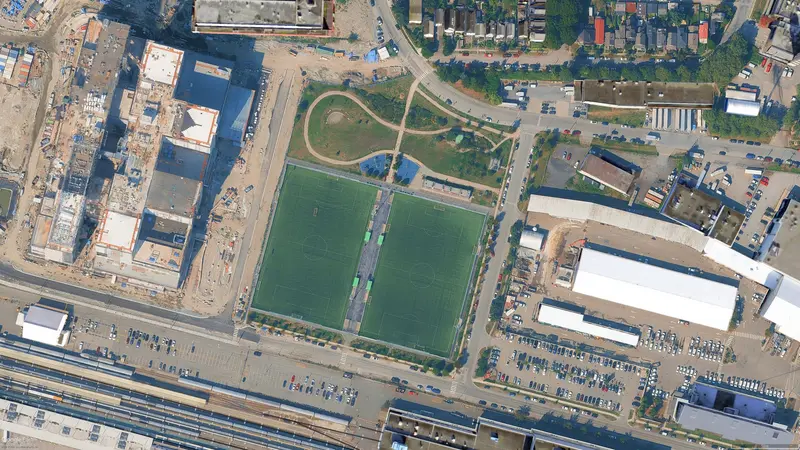
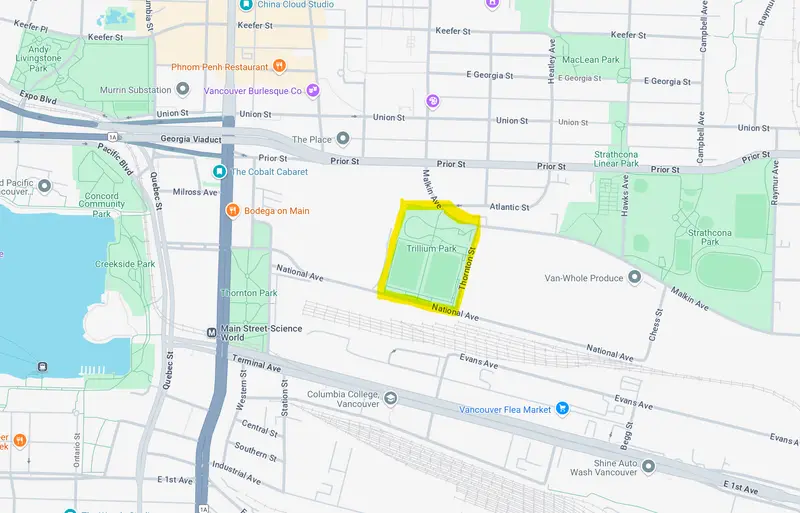
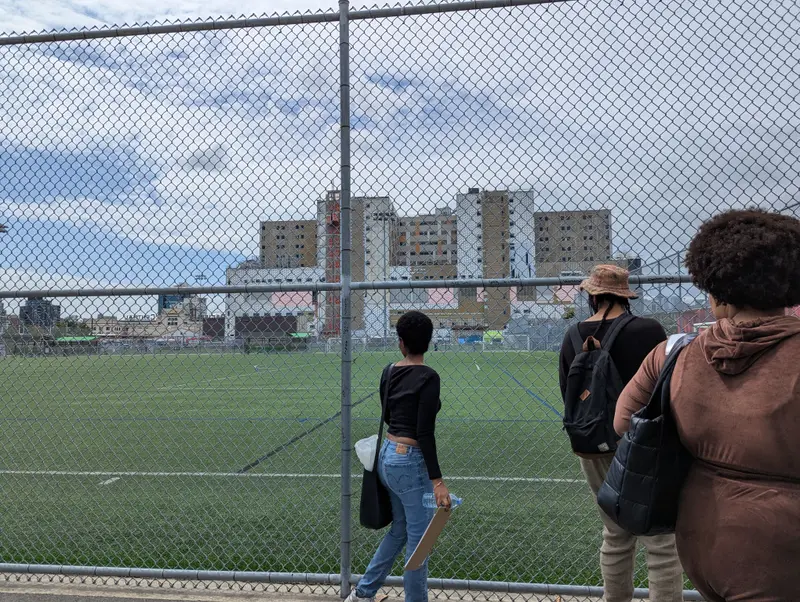
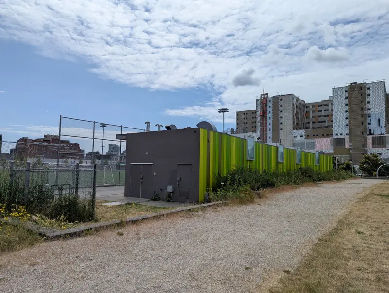
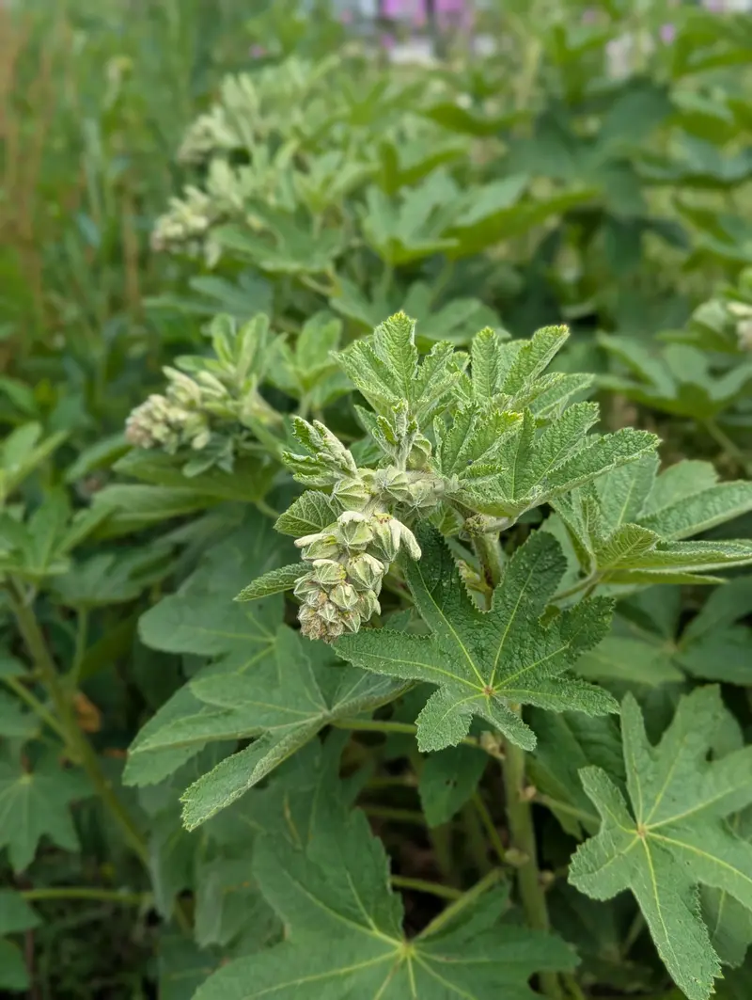
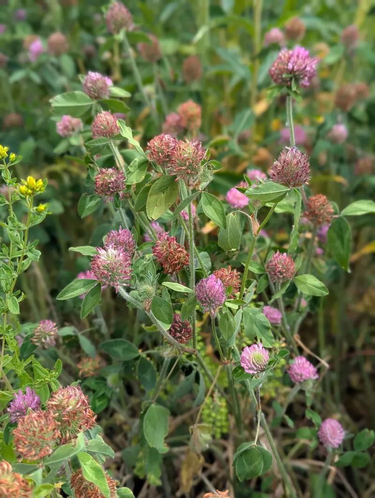
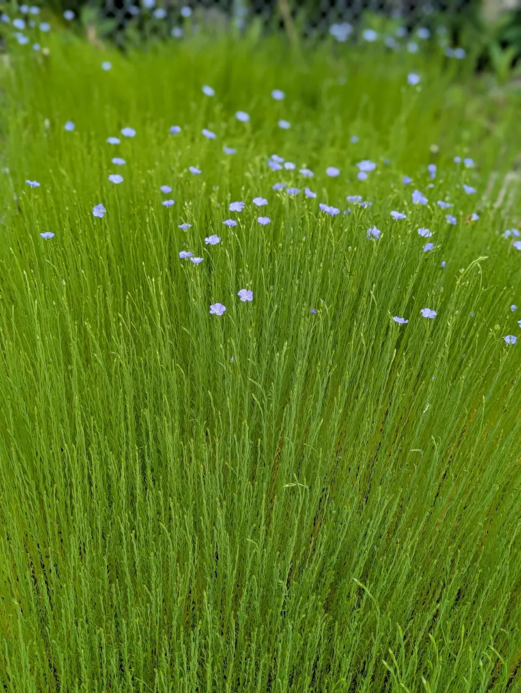
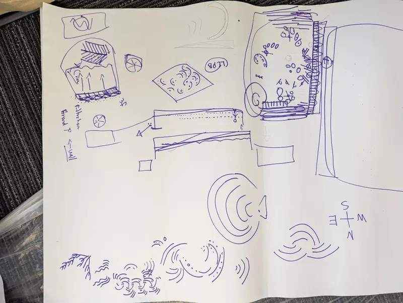
The beaded walkway
The beaded walkways draw on the Cree word âcimostakewin (ᐋᒋᒧᐢᑕᑫᐃᐧᐣ), meaning storytelling or narrative. Here, storytelling is an act of transmitting knowledge through care and connection. The pathways are tactile, embodied stories, inviting visitors to walk alongside the teachings, agreements and ancestral memory that shape this land.
As a mixed Cree woman, this piece holds personal meaning for me. Beading is a way of preserving, honouring and carrying stories, and the walkway threads together tradition, resistance and hope. It acknowledges the agreements being shaped through the Land Care Use Plan, and reaffirms that land stewardship is itself a story, made real through action.
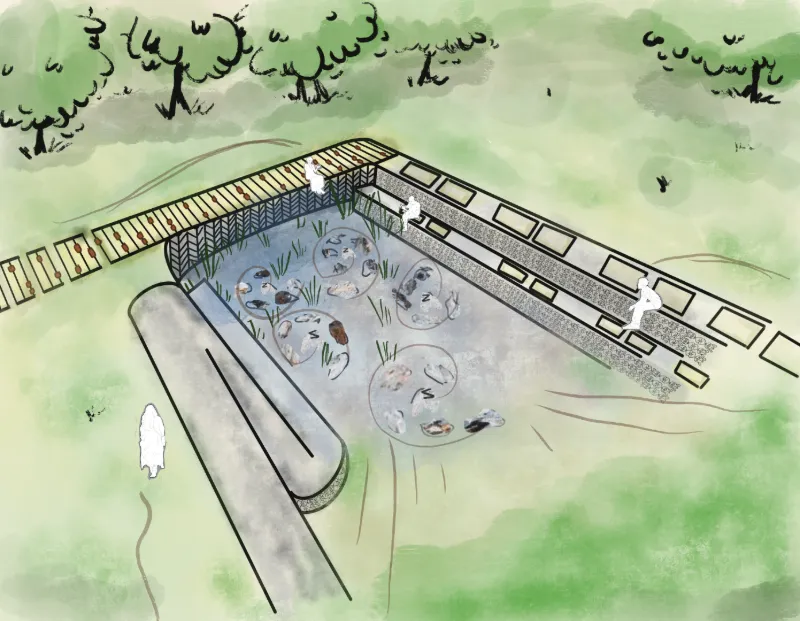


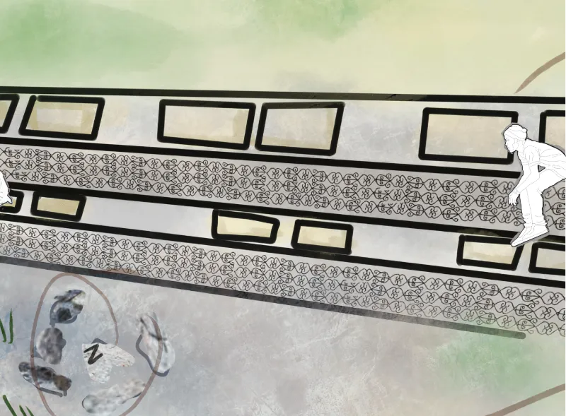
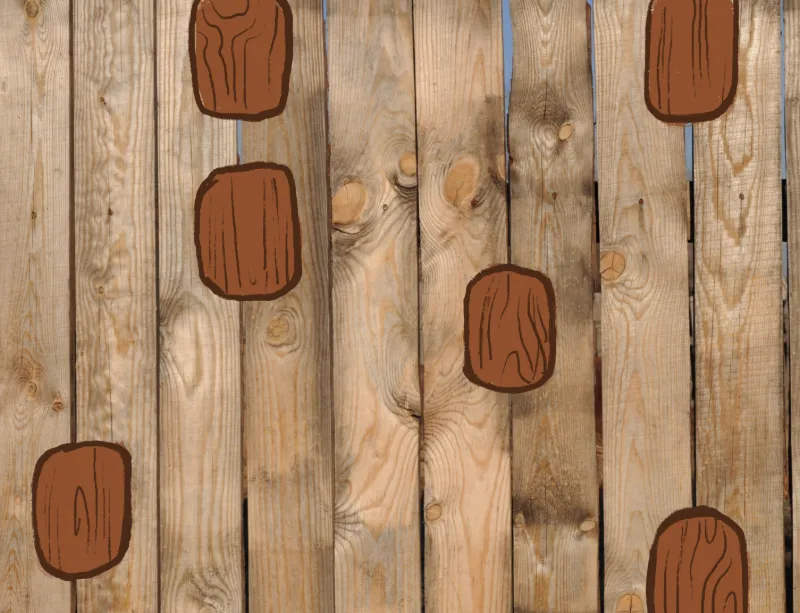
Love as a design brief
Nyomi brought two Adinkra symbols into the work: Odo nyera fie kwan, “love does not lose its way home,” and Asase ye duru, “the earth has weight,” a symbol of providence and the divinity of Mother Earth. Together they asked:
- What does love for a multicultural community look like after colonization?
- How is love tied to healing our connection to the land, our ancestors and grieving the past?
- How can decolonized expressions of love shape how we foster connection and safety?
We also asked planners to dedicate space at the park’s entryways for xʷməθkʷəy̓əm, Sḵwx̱wú7mesh and səl̓ílwətaʔɬ artists facing the hospital, and for Black, Chinese and community artists facing their own community spaces, so the park is shared and owned by its neighbours.
Phasing
- FeasibilityHydrogeological, geotechnical and environmental assessments; a physical model; first conversations with the Host Nation.
- Landscape activation and cultural weavingA Host Nation ceremony to launch construction, excavation, plumbing and filtration and stone gathered with care.
- Construction and communityAdinkra panels, the beaded boardwalk, local planting given time to settle and a Cree-led wood carving workshop.
- Unveiling and longevityA blessing ceremony, seasonal maintenance, wellness workshops led by spiritual leaders and open, unstructured public use, until the piece is eventually returned to the water.